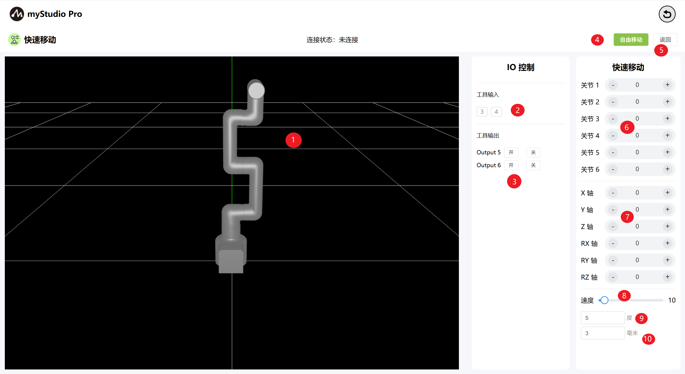
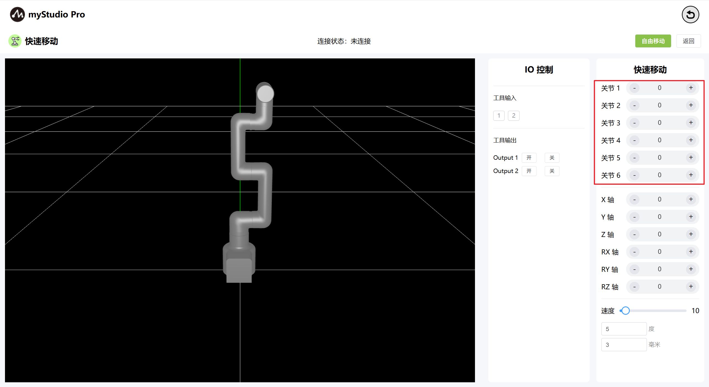
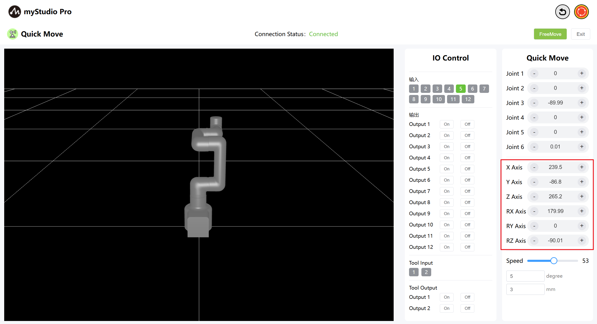
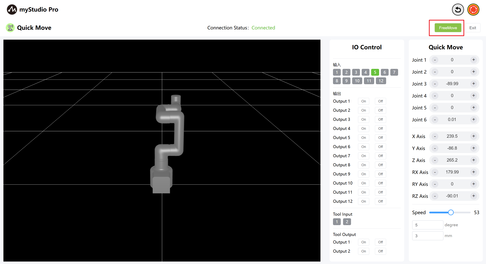
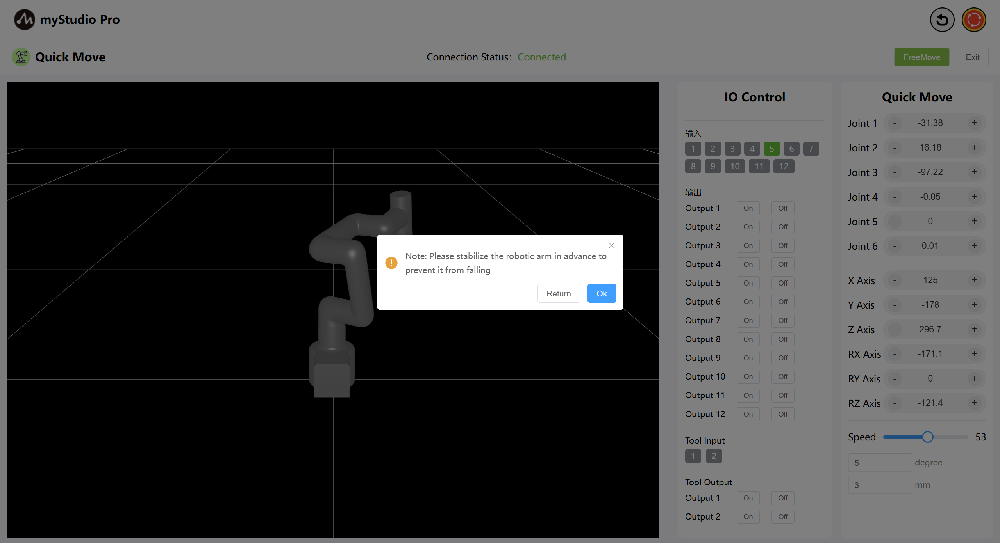
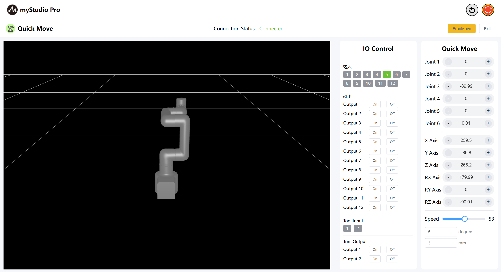
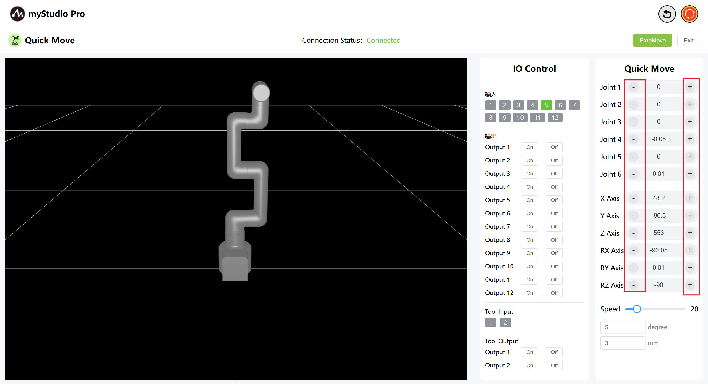
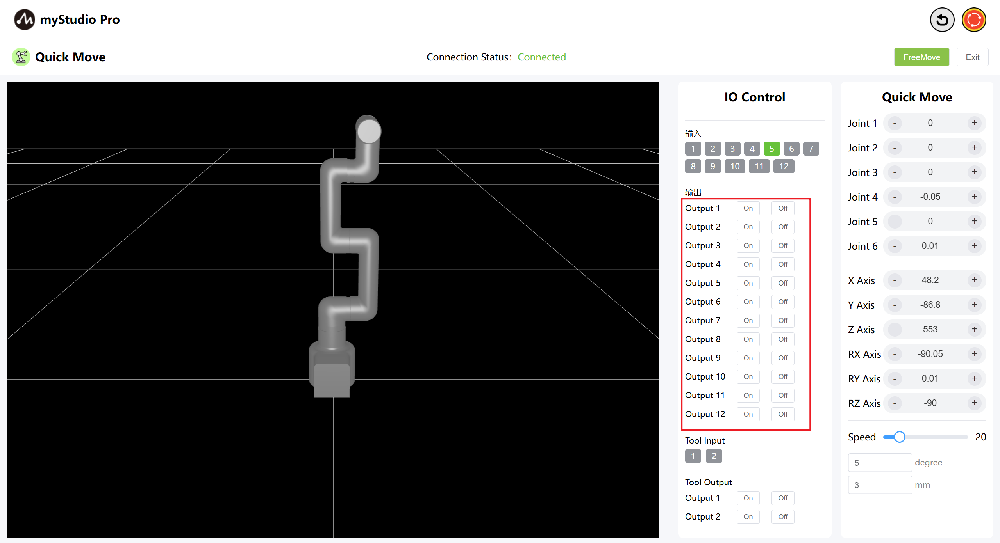
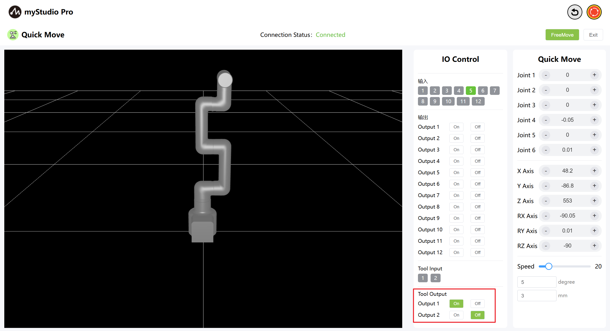
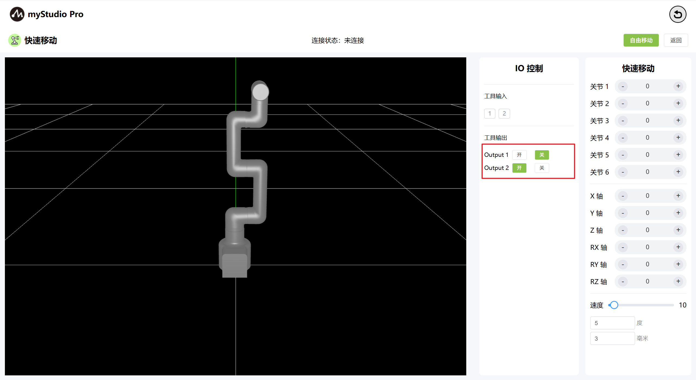

Quick Move
Before You Begin
1.Ensure the machine is powered on
2.Ensure the machine is properly connected and communicating
3.Ensure the machine is in zero position
4.The machine server is enabled
1 Interface Introduction

| Serial Number | Description |
|---|---|
| 1 | MyCobotPro450 3D simulation model |
| 2 | The bottom IO pin numbers 1-12 are input and belong to the security module detection items |
| 3 | The bottom IO pin numbers 1 to 12 are for output. You can click the switch button to set the output |
| 4 | Terminal IO pins 1 and 2, input |
| 5 | Terminal IO pins 1 and 2, output, used to control the Pro force-controlled gripper |
| 6 | Enable free movement mode |
| 7 | Exit the fast movement interface |
| 8 | Angle Control: Click the + or - buttons to control the joint angles of the robot arm. The values represent the current joint angle information of the robot arm, and you can also directly modify the values to control the joints. |
| 9 | Coordinate Control: Click the + or - buttons to control the coordinates of the robot arm. The values represent the current coordinate posture information of the robot arm, and you can also directly modify the values to control the coordinates. |
| 10 | Set the movement speed of the robot arm. The default is 10 mm/s. |
| 11 | Angle Step: The angle value to increase or decrease each time when adjusting the angle. |
| 12 | Coordinate Step: The coordinate value to increase or decrease each time when adjusting the coordinate posture. |
2 Angle Control
In the Angle Control area, click the + and - buttons to control the joint angles of the robotic arm. The values represent the current joint angles of the robotic arm. You can also directly modify the values to control the joints.

3 Coordinate Control
Before using coordinate control, move Joint 3 to an angle of approximately -90 degrees.
In the coordinate control area, click the + and - buttons to control the robot arm's coordinates. The values represent the current robot arm's coordinate position information. You can also directly modify the values to control the coordinates.

4 Free Movement
By clicking the Free Move button, the free move mode is turned on. The interface button turns orange, indicating that the machine is in free move mode and can be dragged and moved.

Note: After clicking, a secondary confirmation pop-up window will appear first to prevent the mechanical arm joint from loosening due to accidental clicking and causing a fall.
Click the OK button to release the joint, and the machine can move freely.

The button turns yellow:

When the free movement button is yellow, clicking it again turns free movement mode off.
5 Keep Moving
By long-pressing the + - buttons in the corresponding area, you can control the robot to move continuously at the specified Angle.

Note: After holding down the + - buttons for 3 seconds each time, you need to release the buttons, hold them down again, and then continue the operation to keep moving.
6 IO Control
6.1 Base IO
Set the output of the bottom IO pin numbers 1-12, and users can customize the control actuator. For example, the control grippers and suction pumps can be customized.

Click the on/off button to make Settings.
6.2 END IO
Set terminal IO pins 1-2 as output to control the Pro force-controlled gripper.

Turn on the Pro force-controlled gripper by clicking the On/Off button.

Turn off the Pro Force Control Gripper by clicking the Off On button.
